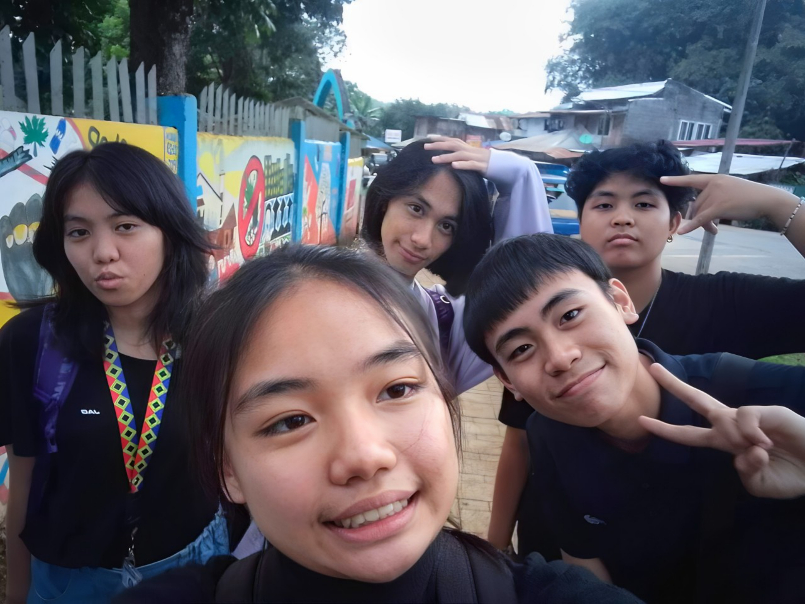
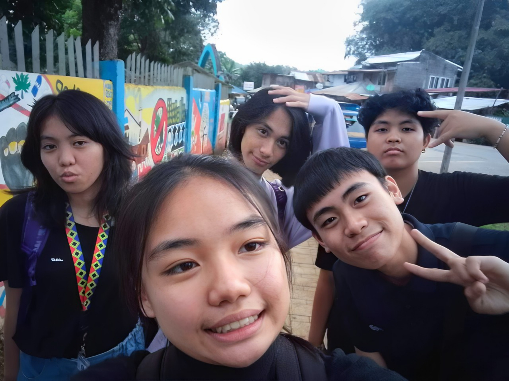

My Circle of Friends
This is a group photo of my friends from our senior high school days. Because of them, my high school journey was filled with fun and unforgettable memories. We always helped each other, both academically and emotionally. Although we now have different lives in college, we still hang out and keep in touch whenever we have time. Having them as my friends is something to be proud of.